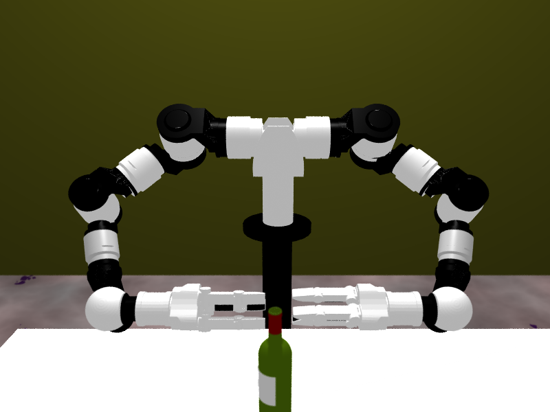
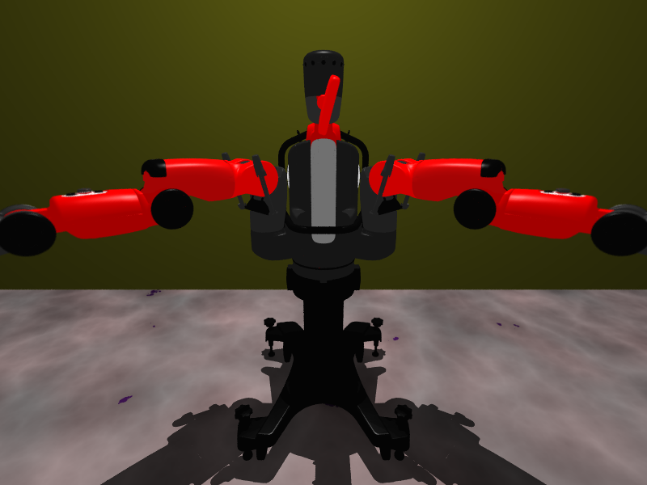

A. C. Huamán Quispe
Renderer Library
- I very recently created a tiny library to parse worlds in DART and render them using POV-Ray. The results, I believe, are rather neat and much better than regular OpenGL. The library is called lighter and is available on my Github page. There are still some glitches I have to fix (notice Baxter's twisted head?), so stay tuned.


Software Tools for Golems robots